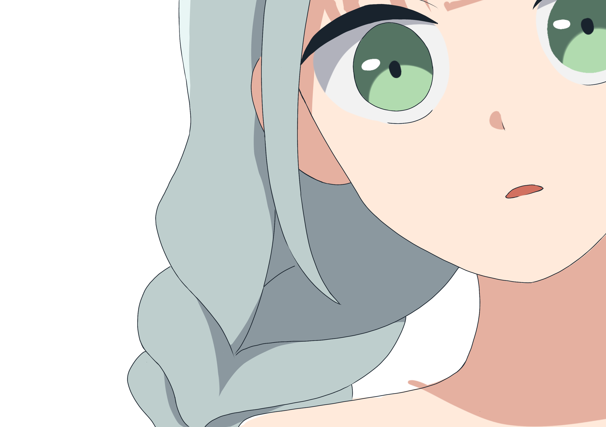
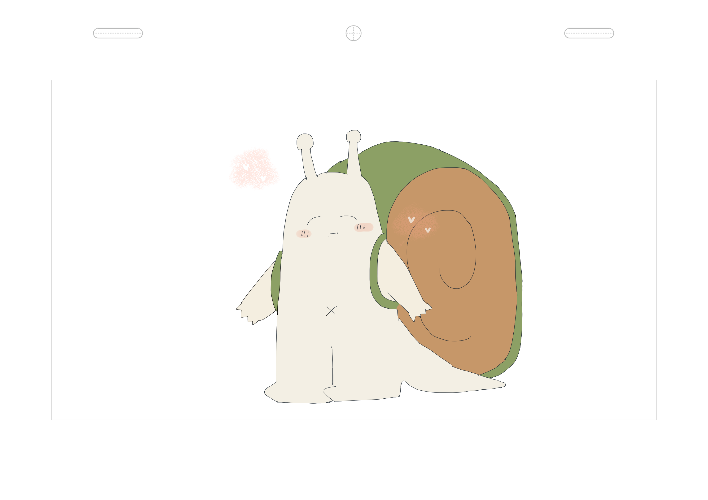

Shell Arc デジタルコンテンツ制作フレームワーク
未定研 (2026) | Discord ボット・インターフェース解説
💬
Shell Arc ってなに？（導入ミニ解説）

いてみちゃん
今年Shell ArcっていうDiscordアプリを導入したらしいけど、Shell Arcは一体なんなの？ファイル管理って、そのまま送り合えばいいんじゃん。

ぬるたろう
少人数ならファイルを送りあっても確かに問題ないけど、チームが大きくなると色々と大変なのぬる。「あのカットのリンクはどこにあったかな」とか「昨日の方がやはりいいけどそのファイルが見つからない」とか、みたいなカオスになるかもぬる。
いてみちゃん
だからShell Arcを通じて提出するんだね。
ぬるたろう
そうなのぬる！Shell Arcを通したら、みんなの作品が同じ場所で管理されて、迷わなくなるのぬる〜。
いてみちゃん
でもそれはただのファイル転送アプリじゃないの？
ぬるたろう
違うよぬる！Shell Arcは厳密にはただのアプリじゃないの。Shell Arcは未定研で開発された、オープンソースデジタルコンテンツ制作フレームワークだぬる。Shell Arcという安全な枠組みの中で、クリエーターのみんなさんが安心して制作できるためのものだよぬる〜。
いてみちゃん
未定研発…とは？
ぬるたろう
Shell Arcの中心は、ShellArc のワークフローを支えるライブラリ「ShellArc Core」、独自のバージョン管理コア「Git Subsystem for ShellArc」、制作進行補助とスケジュリングサーバー「Itemi Action」、そしてShellArcのコア機能に直接かつ安全にアクセスできるエクスプレッション「ShellArc Command Set」から構成されているぬる。そしてそれらの機能をクリエーターが簡単に使えるために、さまざまなインターフェースがあるのぬる。Discord ボットは、そのインターフェースの一つだぬる。
いてみちゃん
なるほど、つまりアニメじゃなくても使えるの？
ぬるたろう
さすがいてみちゃん！そうなのぬる！ShellArc は、アニメだけじゃなく、インディーゲーム制作、実写映画制作、多人数のTRPG創作などにも活用できるぬる！ShellArc Core を自分が使い慣れているシステムに繋げば、誰でもShell Arc を活用できるぬる。
未定研 Shell Arc 2026 Discord ボット - コマンド一覧
1. Shell Arc 2026 コマンド
..up
提出
メッセージに提出したいファイルを添付して、送信すると、提出している作業などの確認UIが出てきます。UIに従って選択すると、ファイルが提出されます。
..upbig
巨大ファイル
Discordで送信できない巨大ファイルを提出したいとき、このコマンドを送信してください。アップロード用のURLが返され、180秒以内にアップロードしてください。
..appr
作画監督等用
[作画監督等用] ..apprと送信すると、そのチャンネルのカットを承認するか否かを選択するUIが出てきます。UIに従って選択すると、チェックができます。
..dl (バージョン)
ダウンロード
..dlと送信すると、デフォルトで該当カットの「最新確定カット」が返されます。
引数で
-1
を指定すると、「最新チェック待ちカット」が返されます。
引数で「バージョンインデックス」を指定すると、指定されたバージョンが返されます。
..check
作画監督等用
[作画監督等用] デフォルトで「最新チェック待ちカット」が返されます。作監チェックなどに便利です。
..reg (-f)
担当登録
デフォルトで自分を該当カットに登録します。
-f
フラグをつけると、すでに該当カットに登録している人がいるかどうかにかかわらず、強制的に自分の名前で上書きできます。
..history 作業工程 (最大長さ)
履歴
指定された作業工程の提出履歴を調べることができます。最大長さを指定すると、返される履歴リストの件数を制限できます。
返される履歴は、「バージョンインデックス - 履歴内容」で表示されます。このバージョンインデックスを使い、
..dl
で過去バージョンを取得できます。
..ask (メンバー)
確認
デフォルトで自分の現在の担当作業を確認できます。メンバー引数を指定すると、指定されたメンバーの現在の担当作業を確認できます。
..sync
同期
クラウドにサーバー内容を同期させます。
..sapyc コマンド
デベロッパー
ShellArc Expression 命令系コマンドを実行できます。
2. ぬるたろうChat
..nuru 内容
AIサポート
テクニカルサポートチャットボット「ぬるたろう」を呼び出すコマンドです。ShellArcの使用方法などの技術的な質問に対応できます。
3. Itemi Action
..itemi 内容
AIサポート
制作進行サポートチャットボット 「いてみちゃん」 を呼び出します。
スケジュールについて相談できます。
..remind YYYYMMSSHHMM リマインド内容 (メンバー番号)
スケジューラ
いてみちゃんにリマインダーを登録できます。
指定した日時に、登録したチャンネルへリマインドが届きます。
デフォルトのリマインド対象は 送信者自身 です。